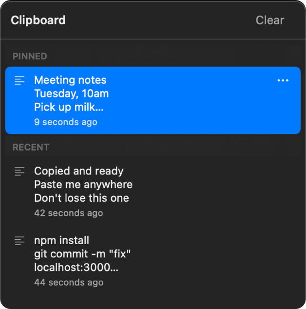

Clipboard history for macOS. Lives in the menu bar, captures every copy, and pastes it back where you were.
Download for macOS
Text and images land in your history automatically. Nothing to press, nothing to configure.
Pick an item and it goes straight into the app you were just in — not merely onto the clipboard.
Pinned items sit at the top and are never pushed out, however much you copy.
No Dock icon, no windows, about 17 MB of memory and no measurable CPU when idle.
Copies marked confidential by password managers are ignored on purpose, never stored.
History is a plain JSON file on your own disk. It survives reboots and never leaves the machine.
Open the DMG and drag ClipStack across, the usual way.
macOS will say “Apple could not verify ‘ClipStack’ is free of malware.” Click Done, then open System Settings → Privacy & Security, scroll to the bottom, and click Open Anyway.
ClipStack asks once. It needs this only to press ⌘V on your behalf. Everything else — capturing copies, the popup, pinning — works without it.
Why the warning? Apple only lets developers skip it by paying $99 a year for a Developer ID and notarizing each build. ClipStack is a free personal project, so it isn't notarized. The app is signed and its source is on GitHub — but macOS can't tell the difference, and shows the same warning it shows for anything unnotarized.
Prefer one command to clicking through settings? This does the same thing:
xattr -dr com.apple.quarantine /Applications/ClipStack.app| Key | Does |
|---|---|
| ⌥⌘V | Open the popup at the pointer |
| ↑ ↓ | Move the selection |
| ⏎ | Paste the selected item |
| ⌘1–⌘9 | Paste the nth item directly |
| ⌫ | Delete the selected item |
| ⎋ | Dismiss |
Hover any row and click ⋯ to pin or delete it. Right-click the menu bar icon for Clear History and Quit.
Your clipboard history is a JSON file in ~/Library/Application Support/ClipStack/, on your disk and nowhere else. There is no account, no sync, no analytics, and no telemetry.
The one network request ClipStack ever makes is a version check against the GitHub releases API, at most once a day, to tell you when a new version exists. It sends nothing about you and never downloads anything on its own. Copies that password managers mark as confidential are dropped before they reach the history.
It's a Swift package — no Xcode project, and Command Line Tools are enough.
git clone https://github.com/mickey187/clipstack.git
cd clipstack
./Scripts/create-signing-cert.sh # once
./Scripts/build-app.sh